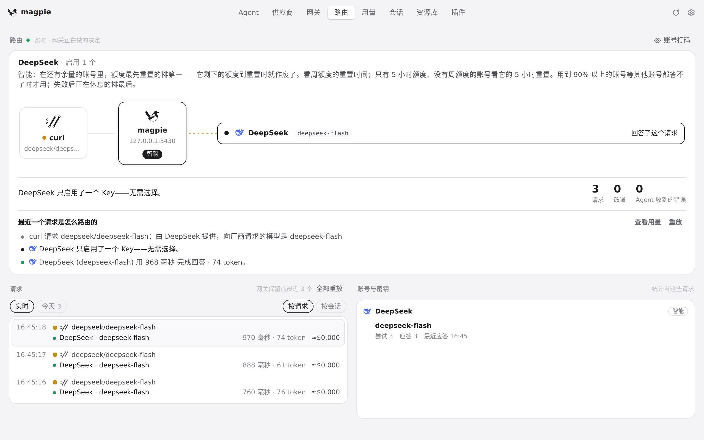
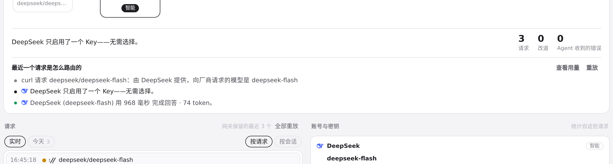

#703 界面预览
commit 5c4a2bf · 回到 PR · 改动集中在「路由」页的请求说明文案：带 sealedTask 的请求会说明子代理任务已加密、只有 ChatGPT 账号能读，并说明优先使用回答过主代理的账号；子代理请求改说由 magpie 在路由组内选模型；额度相关句不再一律称「每周」而改说「剩余额度 / 距重置」；命中规则却没有可用账号、以及没有命中规则的句子也改写得更短。后端只是把这些路由决定记进 trace，未改变路由策略。
红线是鼠标走过的轨迹，红色圆环是一次点击；底部文字是这一步在做什么。空格暂停，← → 逐段查看。

路由页显示请求说明的位置 · 进入「路由」：沙盒只有 DeepSeek，最近的请求都来自 curl
路由页显示请求说明的位置 · 最近几个请求的列表

路由页显示请求说明的位置 · 这条请求的路由说明——加密子任务、主代理账号优先、子代理选模型这类条目都出现在这个列表里